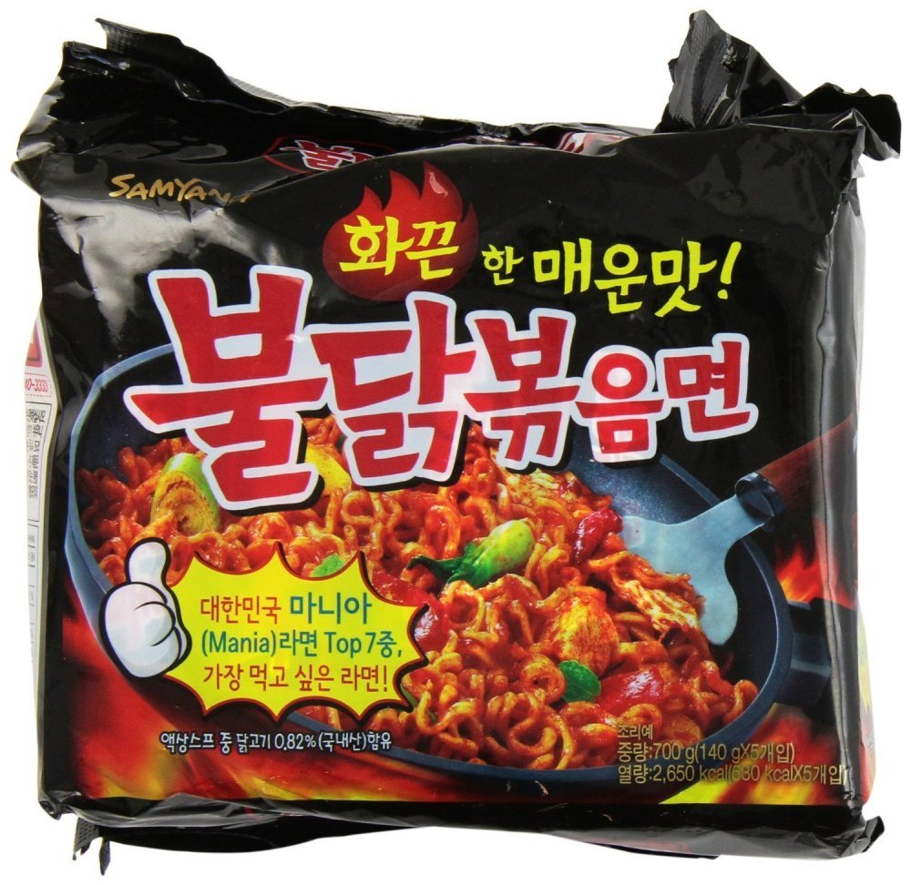
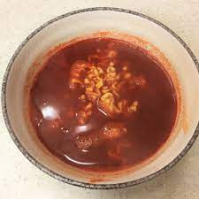
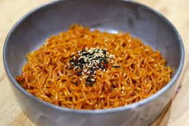

How to cook fire noodle?(regular one) 🤪

Basically, fire noodle is also known as Buldak Bokkeum Myun in Korean, are a popular Korean dish that originated from a spicy chicken dish. It consists of stir-fried instant noodles with a spicy sauce made from chili paste, soy sauce, sugar, and other seasonings. The dish is known for its extreme spiciness and is often marketed as a challenge to those who dare to try it. Fire noodles have become a popular trend in many countries, with people sharing videos of themselves attempting to finish a whole bowl of these spicy noodles.
Insturction
😋yummy yummy😛

failed😔😭😤
